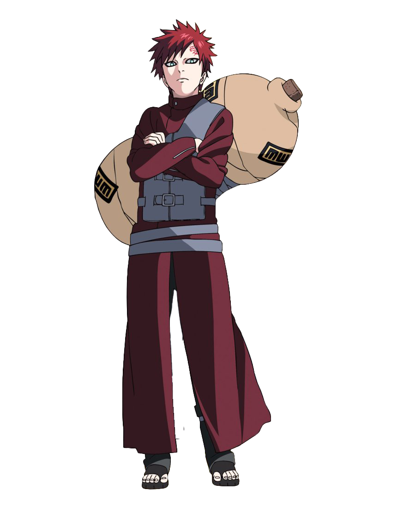

Ficha do Personagem
| Nome | Gaara |
|---|---|
| Vila | 🏜 Vila Oculta da Areia (Sunagakure) |
| Clã | Sem clã oficial |
| Time | Time de Sunagakure |
| Professor | Baki |
| Rank | Kazekage |
| Besta com Cauda | Shukaku (Uma Cauda) |
| Natureza do Chakra | Terra, Vento e Magnetismo |
| Aniversário | 19 de Janeiro |
| Idade | 17 anos (Naruto Shippuden) |
História
Gaara nasceu como jinchūriki do Shukaku, a besta de uma cauda. Durante sua infância sofreu rejeição e isolamento, tornando-se uma pessoa fria e violenta.
Após conhecer Naruto Uzumaki e compreender a importância dos laços de amizade, Gaara mudou completamente sua visão de mundo. Com o tempo conquistou a confiança de sua vila e tornou-se o Quinto Kazekage de Sunagakure.
Principais Técnicas
- 🏜 Manipulação de Areia
- 🛡 Escudo de Areia
- ⚰ Caixão de Areia
- 💥 Funeral do Deserto
- 🌪 Grande Cascata de Areia
- 🧲 Liberação de Magnetismo
- 🐾 Transformação Parcial do Shukaku
Curiosidades
- Foi o jinchūriki do Shukaku.
- Tornou-se Kazekage ainda muito jovem.
- É irmão de Temari e Kankurō.
- Possui uma tatuagem com o kanji "Amor" na testa.
- É um grande aliado de Naruto Uzumaki.
- Participou da Quarta Grande Guerra Ninja.
- É um dos Kages mais respeitados de sua geração.